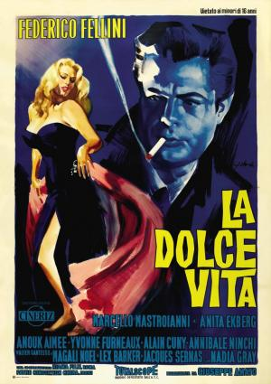

La Dolce Vita

Género
Drama | Comedia | Periodismo | Cine dentro del cine
Sinopsis
Marcello Rubini es un desencantado periodista romano, en busca de celebridades, que se mueve con insatisfacción por las fiestas nocturnas que celebra la burguesía de la época. Merodea por distintos lugares de Roma, siempre rodeado de todo tipo de personajes, especialmente de la élite de la sociedad italiana. En una de sus salidas se entera de que Sylvia, una célebre diva del mundo del cine, llega a Roma, cree que ésta es una gran oportunidad para conseguir una gran noticia, y, en consecuencia, la perseguirá por las noches por diferentes lugares de la ciudad.